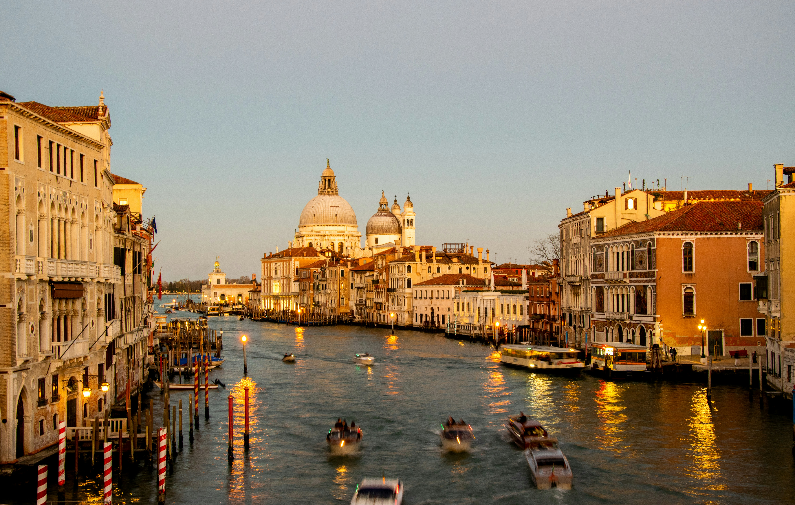
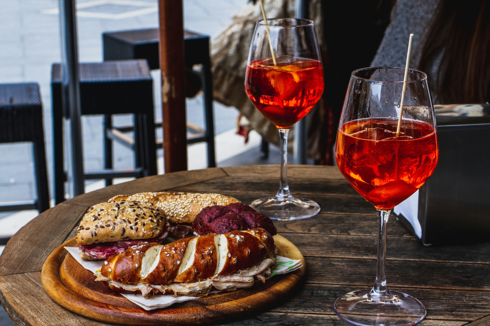

Conheça Veneza
Veneza é um dos destinos mais fascinantes da Itália, conhecida por seus canais, pontes históricas e arquitetura que atravessa séculos. Construída sobre um conjunto de ilhas, a cidade encanta visitantes com suas paisagens únicas, sua riqueza cultural e sua atmosfera romântica. Entre passeios de gôndola, praças históricas e ruas estreitas repletas de charme, cada canto revela uma nova descoberta. Da grandiosidade da Praça de São Marcos à beleza da Ponte de Rialto, Veneza oferece experiências que unem história, arte e tradição. Explore Veneza e descubra seus principais pontos turísticos, sua gastronomia, seus bairros encantadores e tudo o que torna essa cidade tão especial.

História e Cultura de Veneza
Veneza possui uma história marcada pelo comércio marítimo, pela arte e pela influência cultural que exerceu ao longo dos séculos. Durante a Idade Média e o Renascimento, a cidade tornou-se uma importante potência comercial, conectando diferentes regiões da Europa ao Oriente e contribuindo para a circulação de mercadorias, conhecimentos e tradições. Essa riqueza histórica pode ser observada em seus palácios, igrejas, museus e edifícios antigos, que preservam características de diferentes períodos. A cidade também é conhecida pelo tradicional Carnaval de Veneza, famoso por suas máscaras elaboradas, fantasias elegantes e celebrações que transformam suas ruas em um cenário cheio de história e encanto. Conhecer Veneza é mergulhar em um patrimônio cultural que permanece vivo em sua arquitetura, em suas festas e no cotidiano de seus habitantes.
Gastronomia e Ilhas de Veneza
A experiência de conhecer Veneza vai muito além de seus canais e monumentos. A gastronomia local é uma parte importante da identidade da cidade, reunindo receitas tradicionais italianas com influências de sua história marítima. Entre os destaques estão os pratos com frutos do mar, os risotos, as massas e os cicchetti, pequenos petiscos servidos em bares tradicionais conhecidos como bacari. Nos arredores do centro histórico, algumas ilhas oferecem experiências igualmente especiais. Murano é reconhecida mundialmente por sua tradição na fabricação artesanal de vidro, enquanto Burano chama a atenção por suas casas coloridas e pela produção histórica de rendas. Já Torcello proporciona uma atmosfera mais tranquila, com construções antigas e importantes vestígios da história veneziana. Explorar essas ilhas e experimentar os sabores regionais é uma oportunidade de descobrir diferentes aspectos de Veneza, apreciando suas tradições, sua diversidade e seu estilo de vida.
